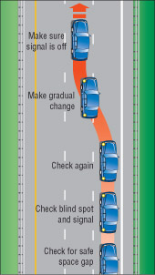

Changing your position on the road involves changing lanes or overtaking and passing another vehicle. Before beginning, be sure you have enough space and time to complete the move safely.
Changing lanes
Changing lanes is a movement from one lane to another on roads with two or more lanes in the same direction. You may have to change lanes to overtake another vehicle, to avoid a parked vehicle or when the vehicle ahead slows to turn at an intersection.
Never change lanes without giving the proper signal and looking to make sure the move can be made safely.
Here are the steps for making a lane change:
- Check your mirrors for a space in traffic where you can enter safely.
- Check your blind spot by looking over your shoulder in the direction of the lane change. Be especially careful to check for bicycles and other small vehicles. Signal that you want to move left or right.
- Check again to make sure the way is clear and that no one is coming too fast from behind or from two lanes over on a multi-lane road.
- Steer gradually into the new lane. Do not slow down, maintain the same speed or gently increase it.
Never make sudden lane changes by cutting in front of another vehicle, including bicycles. Other drivers expect you to stay in the lane you are already in. Even if you signal, they expect you to yield the right-of-way.
Avoid unnecessary lane changes or weaving from lane to lane. You are more likely to cause a collision, especially in heavy traffic or bad weather. Don't change lanes in or near an intersection. Remember that spending a few seconds behind another vehicle is often safer than going around it.

Diagram 2-45
Passing
Passing is changing lanes to move past a slower vehicle. While all public roads have speed limits, not all vehicles travel at the same speed. For example, cyclists, road service vehicles and drivers ahead that are preparing to turn are usually slower than the through traffic. You may want to pass some slow-moving vehicles when you are following them.
Never overtake and pass another vehicle unless you are sure you can do so without danger to yourself or others. Don't pass moving snow plows under any conditions. If in doubt, do not pass.
Here are the steps for passing a vehicle:
- Use your left-turn signal to show that you want to pass and check that the way is clear ahead and behind before moving into the passing lane.
- Watch for bicycles and small vehicles that may be hidden from view in front of the vehicle you are about to pass. Also watch for vehicles that may be turning left in front of you and vehicles or pedestrians entering the road from another road or driveway.
- Change lanes only after signalling. After overtaking, signal that you want to move back into the lane you started from, and when you can see the entire front of the vehicle you are passing in your inside mirror, make the lane change. Be careful not to cut off a vehicle by suddenly moving in front of it.
- If the vehicle you are passing speeds up, do not race. Go back to your original lane. And do not speed up when another driver is trying to pass you. It is unlawful and dangerous.

Diagram 2-46
Passing within 30 metres of a pedestrian crossover is not permitted. Passing left of a centreline is not permitted 30 metres from a bridge, viaduct or tunnel. Don't attempt to pass when approaching the crest of a hill or on a curve where your vision of oncoming traffic is obstructed and there is not enough clear distance ahead to pass in safety.
When passing parked vehicles, watch carefully for people suddenly opening doors or for doors opened to load and unload.
Motorcycles, bicycles, limited-speed motorcycles and mopeds often need to pull to the left or right side of their lane to avoid dangerous road conditions or to be seen by other drivers. Do not take this as an invitation to pass in the same lane. If you do want to pass these vehicles, do so by changing lanes.
When faster traffic wants to pass you, move to the right and let it pass in safety. When being passed on an undivided road where the passing driver has pulled into the opposite lane, pay attention to oncoming traffic and move closer to the right side of the lane. Be prepared to slow down to let the passing driver get in front of you more quickly to prevent a collision.
On many high-speed roads with three or more lanes in each direction, trucks are not allowed to drive in the far left-hand lane. This means that the lane next to it is the truck passing lane. If you are in this lane and a truck wants to pass, move into the right-hand lane as soon as you can.

Diagram 2-47
Passing at night
Be very careful when you pass other vehicles at night. If you have to pass and the way is clear, follow these steps:
- Switch your headlights to low beams as you approach a vehicle from behind.
- Signal, check your mirrors and blind spot, and pull out to pass. As you move alongside the vehicle you are passing, switch on your high beams. This will let you see more of the road ahead.
- When you can see all of the front of the vehicle you are passing in your rear view mirror, you are far enough ahead to pull back into the right lane. Remember to signal.
Passing and climbing lanes

Diagram 2-48
Some roads have special passing or climbing lanes. These lanes let slower vehicles move into the right-hand lane so that faster ones can pass safely in the left lane.
An advance sign tells drivers they will soon have a chance to pass. Another sign warns when the lane is ending so drivers in the right-hand lane can begin to merge safely with traffic in the left-hand lane.
Passing on the shoulder
You may drive on the right shoulder only to pass a vehicle turning left and only if the shoulder is paved. You may not pass on the left shoulder, paved or not.
Passing on the right
Most passing is done on the left. You may pass on the right on multi-lane or one-way roads and when overtaking a streetcar or a left-turning vehicle.
Passing on the right can be more dangerous than passing on the left. If you are driving in the left most lane with a slower vehicle in front of you, wait for the vehicle to move to the right. Do not suddenly change lanes and pass on the right; the driver in front may realize you want to pass and move to the right at the same time you do.
Passing streetcars

Diagram 2-49
You must pass streetcars on the right unless you are driving on a one-way road.
At streetcar stops, stay at least two metres behind the rear doors where passengers are getting off or on. This rule does not apply at stops where an area has been set aside for streetcar passengers. Always pass these areas at a reasonable speed and be prepared for pedestrians to make sudden or unexpected moves.
Summary
By the end of this section, you should know:
- The safety considerations and the sequence of steps to follow when changing lanes or passing
- How to deal with specific situations when passing (for example, at night, streetcars)